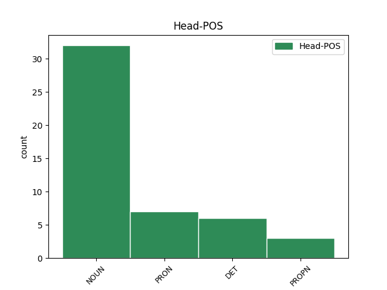

Distribution of features within this leaf

Agreement Rules sorted by frequency.
- When the dependent token is the conjunct(conj) of the head token, and the head token is NOUN and the dependent token is PRON.
1 Dajem _ _ _ _ 0 _ _ _
2 ti _ _ _ _ 0 _ _ _
3 moj _ _ _ _ 0 _ _ _
4 dobri _ _ _ _ 0 _ _ _
5 Isuse _ _ _ _ 0 _ _ _
6 i _ _ _ _ 0 _ _ _
7 svemogući _ _ _ _ 0 _ _ _
8 Bože _ _ _ _ 0 _ _ _
9 moju _ _ _ _ 0 _ _ _
10 obitelj obitelj NOUN Ncfsa Case=Acc|Gender=Fem|Number=Sing 0 _ _ _
11 i _ _ _ _ 0 _ _ _
12 sebe sebe PRON Px--sa Case=Acc|PronType=Prs|Reflex=Yes 10 conj _ _
13 u _ _ _ _ 0 _ _ _
14 Vaše _ _ _ _ 0 _ _ _
15 ruke _ _ _ _ 0 _ _ _
16 kao _ _ _ _ 0 _ _ _
17 i _ _ _ _ 0 _ _ _
18 do _ _ _ _ 0 _ _ _
19 sada _ _ _ _ 0 _ _ _
20 . _ _ _ _ 0 _ _ _
1 Ona _ _ _ _ 0 _ _ _
2 se sebe PRON Px--sa Case=Acc|PronType=Prs|Reflex=Yes 0 _ _ _
3 prostirala _ _ _ _ 0 _ _ _
4 od _ _ _ _ 0 _ _ _
5 švicarske _ _ _ _ 0 _ _ _
6 granice _ _ _ _ 0 _ _ _
7 do _ _ _ _ 0 _ _ _
8 Ardena _ _ _ _ 0 _ _ _
9 a _ _ _ _ 0 _ _ _
10 sastojala _ _ _ _ 0 _ _ _
11 se sebe PRON Px--sa Case=Acc|PronType=Prs|Reflex=Yes 2 conj _ _
12 od _ _ _ _ 0 _ _ _
13 niza _ _ _ _ 0 _ _ _
14 utvrđenja _ _ _ _ 0 _ _ _
15 i _ _ _ _ 0 _ _ _
16 bunkera _ _ _ _ 0 _ _ _
17 . _ _ _ _ 0 _ _ _
1 Od _ _ _ _ 0 _ _ _
2 novina _ _ _ _ 0 _ _ _
3 je _ _ _ _ 0 _ _ _
4 napravila _ _ _ _ 0 _ _ _
5 šešir _ _ _ _ 0 _ _ _
6 , _ _ _ _ 0 _ _ _
7 malo _ _ _ _ 0 _ _ _
8 nalik _ _ _ _ 0 _ _ _
9 nečemu _ _ _ _ 0 _ _ _
10 što _ _ _ _ 0 _ _ _
11 bi _ _ _ _ 0 _ _ _
12 nosio _ _ _ _ 0 _ _ _
13 Napoleon Napoleon PROPN Npmsn Case=Nom|Gender=Masc|Number=Sing 0 _ _ _
14 ili _ _ _ _ 0 _ _ _
15 netko netko PRON Pi3m-n Case=Nom|Gender=Masc|PronType=Ind 13 conj _ _
16 od _ _ _ _ 0 _ _ _
17 njegovih _ _ _ _ 0 _ _ _
18 bližih _ _ _ _ 0 _ _ _
19 suradnika _ _ _ _ 0 _ _ _
20 . _ _ _ _ 0 _ _ _
1 Do _ _ _ _ 0 _ _ _
2 prije _ _ _ _ 0 _ _ _
3 deset _ _ _ _ 0 _ _ _
4 godina _ _ _ _ 0 _ _ _
5 u _ _ _ _ 0 _ _ _
6 nas mi PRON Pp1-pa Case=Acc|Number=Plur|Person=1|PronType=Prs 0 _ _ _
7 je on PRON Pp3fsa Case=Acc|Gender=Fem|Number=Sing|Person=3|PronType=Prs 6 comp:obj _ _
8 nije _ _ _ _ 0 _ _ _
9 ni _ _ _ _ 0 _ _ _
10 bilo _ _ _ _ 0 _ _ _
11 , _ _ _ _ 0 _ _ _
12 a _ _ _ _ 0 _ _ _
13 danas _ _ _ _ 0 _ _ _
14 je _ _ _ _ 0 _ _ _
15 u _ _ _ _ 0 _ _ _
16 punom _ _ _ _ 0 _ _ _
17 zamahu _ _ _ _ 0 _ _ _
18 , _ _ _ _ 0 _ _ _
19 dok _ _ _ _ 0 _ _ _
20 kontrole _ _ _ _ 0 _ _ _
21 nema _ _ _ _ 0 _ _ _
22 kao _ _ _ _ 0 _ _ _
23 i _ _ _ _ 0 _ _ _
24 na _ _ _ _ 0 _ _ _
25 nizu _ _ _ _ 0 _ _ _
26 drugih _ _ _ _ 0 _ _ _
27 područja _ _ _ _ 0 _ _ _
28 , _ _ _ _ 0 _ _ _
29 upozorava _ _ _ _ 0 _ _ _
30 prof. _ _ _ _ 0 _ _ _
31 dr. _ _ _ _ 0 _ _ _
32 Božidar _ _ _ _ 0 _ _ _
33 Vrhovac _ _ _ _ 0 _ _ _
34 , _ _ _ _ 0 _ _ _
35 pročelnik _ _ _ _ 0 _ _ _
36 Zavoda _ _ _ _ 0 _ _ _
37 za _ _ _ _ 0 _ _ _
38 kliničku _ _ _ _ 0 _ _ _
39 farmakologiju _ _ _ _ 0 _ _ _
40 Interne _ _ _ _ 0 _ _ _
41 klinike _ _ _ _ 0 _ _ _
42 KBC _ _ _ _ 0 _ _ _
43 Rebro _ _ _ _ 0 _ _ _
44 Medicinskog _ _ _ _ 0 _ _ _
45 fakulteta _ _ _ _ 0 _ _ _
46 u _ _ _ _ 0 _ _ _
47 Zagrebu _ _ _ _ 0 _ _ _
48 , _ _ _ _ 0 _ _ _
49 predsjednik _ _ _ _ 0 _ _ _
50 Povjerenstva _ _ _ _ 0 _ _ _
51 za _ _ _ _ 0 _ _ _
52 medicinsku _ _ _ _ 0 _ _ _
53 etiku _ _ _ _ 0 _ _ _
54 i _ _ _ _ 0 _ _ _
55 deontologiju _ _ _ _ 0 _ _ _
56 Hrvatske _ _ _ _ 0 _ _ _
57 liječničke _ _ _ _ 0 _ _ _
58 komore _ _ _ _ 0 _ _ _
59 . _ _ _ _ 0 _ _ _
1 Dovoljno _ _ _ _ 0 _ _ _
2 se _ _ _ _ 0 _ _ _
3 film _ _ _ _ 0 _ _ _
4 bavi _ _ _ _ 0 _ _ _
5 Bruceovom _ _ _ _ 0 _ _ _
6 psihom _ _ _ _ 0 _ _ _
7 , _ _ _ _ 0 _ _ _
8 ne _ _ _ _ 0 _ _ _
9 može _ _ _ _ 0 _ _ _
10 se _ _ _ _ 0 _ _ _
11 reći _ _ _ _ 0 _ _ _
12 da _ _ _ _ 0 _ _ _
13 ne _ _ _ _ 0 _ _ _
14 , _ _ _ _ 0 _ _ _
15 ali _ _ _ _ 0 _ _ _
16 opet _ _ _ _ 0 _ _ _
17 , _ _ _ _ 0 _ _ _
18 fali _ _ _ _ 0 _ _ _
19 mu _ _ _ _ 0 _ _ _
20 ono on PRON Pp3nsn Case=Nom|Gender=Neut|Number=Sing|Person=3|PronType=Prs 21 det _ _
21 nešto nešto PRON Pi3n-n Case=Nom|Gender=Neut|PronType=Ind 0 _ _ _
22 mračno _ _ _ _ 0 _ _ _
23 i _ _ _ _ 0 _ _ _
24 zagonetno _ _ _ _ 0 _ _ _
25 što _ _ _ _ 0 _ _ _
26 je _ _ _ _ 0 _ _ _
27 krasilo _ _ _ _ 0 _ _ _
28 Michaela _ _ _ _ 0 _ _ _
29 Keatona _ _ _ _ 0 _ _ _
30 . _ _ _ _ 0 _ _ _
1 Visoke _ _ _ _ 0 _ _ _
2 hranjive _ _ _ _ 0 _ _ _
3 vrijednosti _ _ _ _ 0 _ _ _
4 , _ _ _ _ 0 _ _ _
5 vrhunski _ _ _ _ 0 _ _ _
6 okus _ _ _ _ 0 _ _ _
7 i _ _ _ _ 0 _ _ _
8 provjereno _ _ _ _ 0 _ _ _
9 domaće _ _ _ _ 0 _ _ _
10 porijeklo _ _ _ _ 0 _ _ _
11 mesnih _ _ _ _ 0 _ _ _
12 prerađevina _ _ _ _ 0 _ _ _
13 koje _ _ _ _ 0 _ _ _
14 se sebe PRON Px--sa Case=Acc|PronType=Prs|Reflex=Yes 15 unk@expl _ _
15 proizvode proizvod NOUN Ncmpa Case=Acc|Gender=Masc|Number=Plur 0 _ _ _
16 pod _ _ _ _ 0 _ _ _
17 uglednim _ _ _ _ 0 _ _ _
18 gastronomskim _ _ _ _ 0 _ _ _
19 markama _ _ _ _ 0 _ _ _
20 Cekin _ _ _ _ 0 _ _ _
21 , _ _ _ _ 0 _ _ _
22 Vindon _ _ _ _ 0 _ _ _
23 i _ _ _ _ 0 _ _ _
24 Rozeto _ _ _ _ 0 _ _ _
25 tako _ _ _ _ 0 _ _ _
26 su _ _ _ _ 0 _ _ _
27 prepoznati _ _ _ _ 0 _ _ _
28 i _ _ _ _ 0 _ _ _
29 od _ _ _ _ 0 _ _ _
30 strane _ _ _ _ 0 _ _ _
31 te _ _ _ _ 0 _ _ _
32 ugledne _ _ _ _ 0 _ _ _
33 organizacije _ _ _ _ 0 _ _ _
34 koja _ _ _ _ 0 _ _ _
35 kvalitetu _ _ _ _ 0 _ _ _
36 ispituje _ _ _ _ 0 _ _ _
37 na _ _ _ _ 0 _ _ _
38 čak _ _ _ _ 0 _ _ _
39 800 _ _ _ _ 0 _ _ _
40 različitih _ _ _ _ 0 _ _ _
41 načina _ _ _ _ 0 _ _ _
42 . _ _ _ _ 0 _ _ _
1 Biljno _ _ _ _ 0 _ _ _
2 ulje ulje NOUN Ncnsn Case=Nom|Gender=Neut|Number=Sing 0 _ _ _
3 ... _ _ _ _ 0 _ _ _
4 ono on PRON Pp3nsn Case=Nom|Gender=Neut|Number=Sing|Person=3|PronType=Prs 2 det _ _
5 koje _ _ _ _ 0 _ _ _
6 možeš _ _ _ _ 0 _ _ _
7 kupiti _ _ _ _ 0 _ _ _
8 u _ _ _ _ 0 _ _ _
9 svakom _ _ _ _ 0 _ _ _
10 dućanu _ _ _ _ 0 _ _ _
11 i _ _ _ _ 0 _ _ _
12 na _ _ _ _ 0 _ _ _
13 kojem _ _ _ _ 0 _ _ _
14 piše _ _ _ _ 0 _ _ _
15 ( _ _ _ _ 0 _ _ _
16 nećeš _ _ _ _ 0 _ _ _
17 vjerovati _ _ _ _ 0 _ _ _
18 ) _ _ _ _ 0 _ _ _
19 biljno _ _ _ _ 0 _ _ _
20 ulje _ _ _ _ 0 _ _ _
21 . _ _ _ _ 0 _ _ _
Disagree Examples:
1 Govoreći _ _ _ _ 0 _ _ _
2 u _ _ _ _ 0 _ _ _
3 Zagrebu _ _ _ _ 0 _ _ _
4 , _ _ _ _ 0 _ _ _
5 Bush _ _ _ _ 0 _ _ _
6 je _ _ _ _ 0 _ _ _
7 izrazio _ _ _ _ 0 _ _ _
8 žaljenje _ _ _ _ 0 _ _ _
9 zbog _ _ _ _ 0 _ _ _
10 toga taj DET Pd-nsg Case=Gen|Gender=Neut|Number=Sing|PronType=Dem 0 _ _ _
11 što što PRON Pi3n-n Case=Nom|Gender=Neut|PronType=Int,Rel 10 unk@fixed _ _
12 Makedonija _ _ _ _ 0 _ _ _
13 nije _ _ _ _ 0 _ _ _
14 dobila _ _ _ _ 0 _ _ _
15 pozivnicu _ _ _ _ 0 _ _ _
16 za _ _ _ _ 0 _ _ _
17 članstvo _ _ _ _ 0 _ _ _
18 u _ _ _ _ 0 _ _ _
19 NATO-u _ _ _ _ 0 _ _ _
20 . _ _ _ _ 0 _ _ _
1 Članica _ _ _ _ 0 _ _ _
2 parlamenta _ _ _ _ 0 _ _ _
3 Gordana _ _ _ _ 0 _ _ _
4 Pop-Lazić _ _ _ _ 0 _ _ _
5 iz _ _ _ _ 0 _ _ _
6 Srpske _ _ _ _ 0 _ _ _
7 radikalne _ _ _ _ 0 _ _ _
8 stranke _ _ _ _ 0 _ _ _
9 ( _ _ _ _ 0 _ _ _
10 SRS _ _ _ _ 0 _ _ _
11 ) _ _ _ _ 0 _ _ _
12 bacila _ _ _ _ 0 _ _ _
13 je _ _ _ _ 0 _ _ _
14 26. _ _ _ _ 0 _ _ _
15 studenog _ _ _ _ 0 _ _ _
16 cipelu _ _ _ _ 0 _ _ _
17 na _ _ _ _ 0 _ _ _
18 potpredsjednicu _ _ _ _ 0 _ _ _
19 parlamenta _ _ _ _ 0 _ _ _
20 Gordanu _ _ _ _ 0 _ _ _
21 Čomić _ _ _ _ 0 _ _ _
22 u _ _ _ _ 0 _ _ _
23 znak _ _ _ _ 0 _ _ _
24 protesta _ _ _ _ 0 _ _ _
25 zbog _ _ _ _ 0 _ _ _
26 toga taj DET Pd-nsg Case=Gen|Gender=Neut|Number=Sing|PronType=Dem 0 _ _ _
27 što što PRON Pi3n-n Case=Nom|Gender=Neut|PronType=Int,Rel 26 unk@fixed _ _
28 je _ _ _ _ 0 _ _ _
29 Čomić _ _ _ _ 0 _ _ _
30 odbila _ _ _ _ 0 _ _ _
31 dozvoliti _ _ _ _ 0 _ _ _
32 njenom _ _ _ _ 0 _ _ _
33 kolegi _ _ _ _ 0 _ _ _
34 iz _ _ _ _ 0 _ _ _
35 SRS-a _ _ _ _ 0 _ _ _
36 da _ _ _ _ 0 _ _ _
37 završi _ _ _ _ 0 _ _ _
38 izjavu _ _ _ _ 0 _ _ _
39 o _ _ _ _ 0 _ _ _
40 kontroverznom _ _ _ _ 0 _ _ _
41 aktu _ _ _ _ 0 _ _ _
42 . _ _ _ _ 0 _ _ _
1 Grossman _ _ _ _ 0 _ _ _
2 je _ _ _ _ 0 _ _ _
3 izjavio _ _ _ _ 0 _ _ _
4 kako _ _ _ _ 0 _ _ _
5 još _ _ _ _ 0 _ _ _
6 uvijek _ _ _ _ 0 _ _ _
7 vjeruje _ _ _ _ 0 _ _ _
8 kako _ _ _ _ 0 _ _ _
9 bi _ _ _ _ 0 _ _ _
10 Washington _ _ _ _ 0 _ _ _
11 mogao _ _ _ _ 0 _ _ _
12 poduprijeti _ _ _ _ 0 _ _ _
13 suđenje _ _ _ _ 0 _ _ _
14 četvorici _ _ _ _ 0 _ _ _
15 generala _ _ _ _ 0 _ _ _
16 u _ _ _ _ 0 _ _ _
17 Srbiji _ _ _ _ 0 _ _ _
18 , _ _ _ _ 0 _ _ _
19 ali _ _ _ _ 0 _ _ _
20 prije _ _ _ _ 0 _ _ _
21 nego _ _ _ _ 0 _ _ _
22 se _ _ _ _ 0 _ _ _
23 to _ _ _ _ 0 _ _ _
24 dogodi _ _ _ _ 0 _ _ _
25 , _ _ _ _ 0 _ _ _
26 njih oni PRON Pp3-pg Case=Gen|Number=Plur|Person=3|PronType=Prs 27 det _ _
27 četvorica četvorica NOUN Ncfsn Case=Nom|Gender=Fem|Number=Sing 0 _ _ _
28 se _ _ _ _ 0 _ _ _
29 moraju _ _ _ _ 0 _ _ _
30 javiti _ _ _ _ 0 _ _ _
31 u _ _ _ _ 0 _ _ _
32 Haag _ _ _ _ 0 _ _ _
33 . _ _ _ _ 0 _ _ _
1 " _ _ _ _ 0 _ _ _
2 Vodenkonji _ _ _ _ 0 _ _ _
3 znaju _ _ _ _ 0 _ _ _
4 biti _ _ _ _ 0 _ _ _
5 nasilni _ _ _ _ 0 _ _ _
6 , _ _ _ _ 0 _ _ _
7 ali _ _ _ _ 0 _ _ _
8 također _ _ _ _ 0 _ _ _
9 zbog _ _ _ _ 0 _ _ _
10 toga taj DET Pd-nsg Case=Gen|Gender=Neut|Number=Sing|PronType=Dem 0 _ _ _
11 što što PRON Pi3n-n Case=Nom|Gender=Neut|PronType=Int,Rel 10 unk@fixed _ _
12 vrte _ _ _ _ 0 _ _ _
13 repom _ _ _ _ 0 _ _ _
14 kao _ _ _ _ 0 _ _ _
15 lopaticama _ _ _ _ 0 _ _ _
16 rotora _ _ _ _ 0 _ _ _
17 kada _ _ _ _ 0 _ _ _
18 obavljaju _ _ _ _ 0 _ _ _
19 nuždu _ _ _ _ 0 _ _ _
20 . _ _ _ _ 0 _ _ _
1 Nekoliko _ _ _ _ 0 _ _ _
2 je _ _ _ _ 0 _ _ _
3 lokalnih _ _ _ _ 0 _ _ _
4 arhitekata _ _ _ _ 0 _ _ _
5 objavilo _ _ _ _ 0 _ _ _
6 svoje _ _ _ _ 0 _ _ _
7 odlučno _ _ _ _ 0 _ _ _
8 protivljenje _ _ _ _ 0 _ _ _
9 uništenju _ _ _ _ 0 _ _ _
10 piramide _ _ _ _ 0 _ _ _
11 , _ _ _ _ 0 _ _ _
12 ne _ _ _ _ 0 _ _ _
13 zbog _ _ _ _ 0 _ _ _
14 toga taj DET Pd-nsg Case=Gen|Gender=Neut|Number=Sing|PronType=Dem 0 _ _ _
15 što što PRON Pi3n-n Case=Nom|Gender=Neut|PronType=Int,Rel 14 unk@fixed _ _
16 predstavlja _ _ _ _ 0 _ _ _
17 kulturnu _ _ _ _ 0 _ _ _
18 baštinu _ _ _ _ 0 _ _ _
19 , _ _ _ _ 0 _ _ _
20 već _ _ _ _ 0 _ _ _
21 zato _ _ _ _ 0 _ _ _
22 što _ _ _ _ 0 _ _ _
23 smatraju _ _ _ _ 0 _ _ _
24 kako _ _ _ _ 0 _ _ _
25 je _ _ _ _ 0 _ _ _
26 građevinu _ _ _ _ 0 _ _ _
27 moguće _ _ _ _ 0 _ _ _
28 prilično _ _ _ _ 0 _ _ _
29 lako _ _ _ _ 0 _ _ _
30 pretvoriti _ _ _ _ 0 _ _ _
31 u _ _ _ _ 0 _ _ _
32 parlamentarni _ _ _ _ 0 _ _ _
33 kompleks _ _ _ _ 0 _ _ _
34 . _ _ _ _ 0 _ _ _